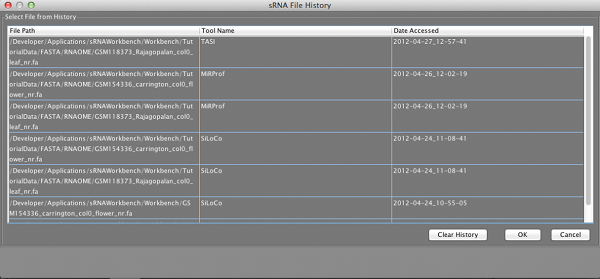

History Browser
The sRNA Workbench History Browser will allow you to access your file history throughout your time using the sRNA Workbench. From here you can look at and select any files that have been accessed or created by other tools in the workbench.
It is accessed through pressing the button shown below on any file open dialogs that support History Browsing
you can see which tool created or accessed the file and when this happened. You can then simply select the file (or in some tools select multiple files) and use it in the next tool as part of you analysis pipeline. Multiple files are selected by holding CTRL (windows/LINUX) or CMD (Mac OSX) and using the mouse to click on each file you are interested in. The history browser lists files in the order that they were last used. The history browser will only show relevant files for the type of file you are looking for (e.g. sRNA files or Genome Files)
The image below shows an example of the history browser window showing the history from a small amount of sRNA Workbench usage.
